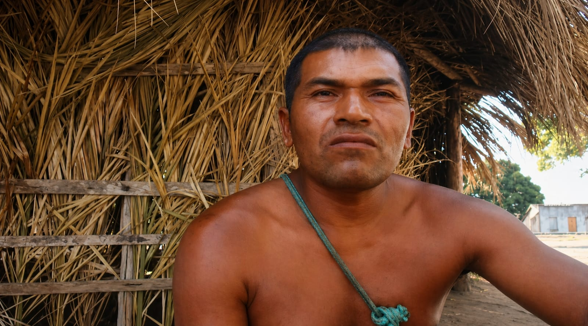

O cacique Jonomonotô, também conhecido como Célio Kiriri, é uma liderança indígena do povo Kiriri, na Bahia. Ele atua na defesa da identidade cultural, especialmente na valorização dos nomes indígenas, além de participar da organização social da comunidade. Sua liderança é notada a partir do ano de 2020, onde começam as suas aparições em entrevistas pela internet.